Das kleine Glück
Startseite
Kalender
Briefkasten
Galerie
Blog
Impressum
Sommer in Graz
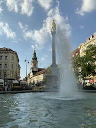
Fontäne am Eisernen Tor
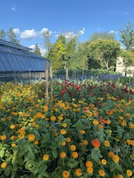
Sommer im Burggarten
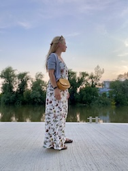
An der Mur
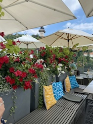
Terasse vom Freyblick
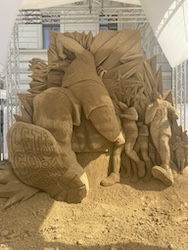
Sandskulpturen-Wettbewerb am Hauptplatz
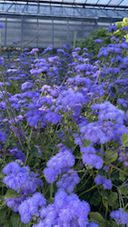
Blaues Blütenmeer im Burggarten
Sommerliche Blumengrüße
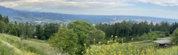
Blick vom Plabutsch auf Graz
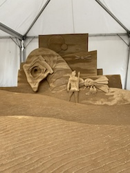
Sandskulpturen-Wettbewerb am Hauptplatz
Sommer auf dem Schlossberg
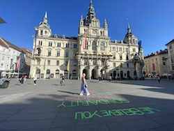
Das Grazer Rathaus
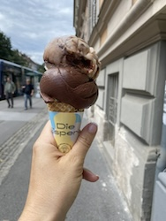
Das angebliche beste Eis des Landes 😉
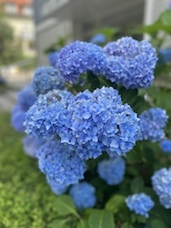
Blaue Hortensie
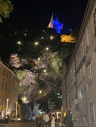
Die Schlossbergstiege bei Nacht
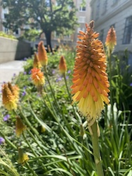
Natürliche Pfeifenputzer
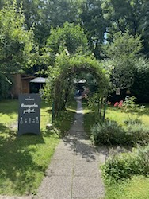
Der Garten von Graz ältestem Café
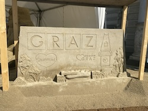
Sandskulpturen-Wettbewerb am Hauptplatz
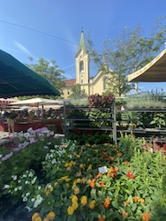
Bluemnauswahl auf dem Bauernmarkt am Kaiser-Josef-Platz
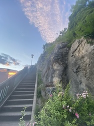
Auf der Schlossberg-Stiege
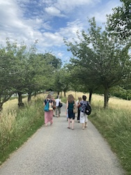
Alle am Rosenhain